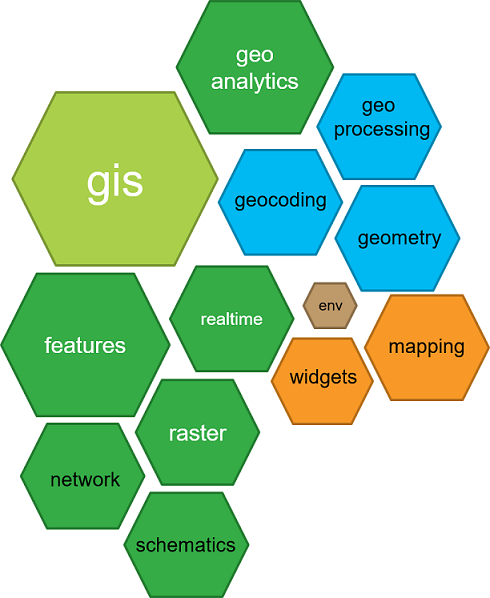

class: center, middle # **CE 2017** --- # Agenda ### 1. <span style="color:blue">Introduction</span> ### 2. <span style="color:blue">A bit on developers</span> ### 3. <span style="color:blue">Introduction ArcGIS bindings for R</span> ### 4. <span style="color:blue">Introduction to ArcGIS Python API</span> --- # Introduction #### During the second day of EC2017 I attended the developers session and the last technical talk, an introduction to ArcGIS Python API. #### The developers session was a light introduction to the geodevelopers.org community resources, as well as some of the key components of ArcGIS platform. #### WebGL, Three.js and ArcGIS JavaScript API were briefly introduced to the attendees. #### ArcGIS R-bindings, which gives access to ArcGIS users to the vast array of data and statistical anylisis of R environment, was succinctly introduced to audience. #### Eventually, the last technical talk gave a general overview of the ArcGIS Python API modules and functionalities. --- # A bit on developers - ESRI is funding geodevelopers.org, a comunity for geodevelopers working mainly on ArcGIS technologies, APIs and apps. - Community members can interact and access the resources via: ### <span style="color:red">Meetup:</span> [meetup.com/Geo-Developers](meetup.com/Geo-Developers) ### <span style="color:blue">Twitter:</span> [twitter.com/Geo_Developers](twitter.com/Geo_Developers) ### Github: [github.com/Geo-Developers](github.com/Geo-Developers) ### <span style="color:red">YouTube:</span> [youtube.com/GeoDevelopers](youtube.com/GeoDevelopers) ### <span style="color:green">Slack:</span> [geodevelopers.org/community](geodevelopers.org/community) --- # Geo-Developers on GitHub --- # A bit of R bindings for ArcGIS ### The arcgisbinding package is designed to allow you to expand your ArcGIS workflows to include R and expand your R analysis to include rich geospatial analysis. ### Through the R-ArcGIS Bridge, you can easily <span style="color:blue">transfer data from ArcGIS to R</span> to gain access to the wealth of statistical packages and functions that you might need to further your analysis. ### Once finished, the bridge allows you to <span style="color:blue">transfer your data back to ArcGIS</span> to take advantage of the mapping, publishing, and sharing aspects of ArcGIS. --- # A bit of R bindings for ArcGIS ## The functions contained within the arcgisbinding package fall into one of three categories: ### - Basic <span style="color:blue">Read/Write</span> Functionality ### - <span style="color:blue">Converting</span> Functionality ### - <span style="color:blue">Wrapping</span> R Tool Functionality --- # A bit of R bindings for ArcGIS ### Scripts' structure is pretty simple. Once requiered libraries are loaded, we may add or not additional functions or classes, and finally we include a <span style="color:blue">tool_exec</span> function. ### The tool_exec functions requires two parameters, input and output arguments, which will allow us to interact with ArcGIS through a toolbox interface. ### Besides writing results to a geodatabase or shapefile, this function may return elements like plots, which will be interactively displayed by ArcGIS. ### Rbridge contains functions to convert spatial entities to R spatial structures and from R spatial structures to ArcGIS spatial entities. --- # A bit of R bindings for ArcGIS ```r tool_exec <- function(in_params, out_params) { #### Load Library for Analysis #### if (!requireNamespace("SemiPar", quietly = TRUE)) install.packages("SemiPar") require(SemiPar) #### Get Input Parameters #### input_features <- in_params[[1]] input_predictions <- in_params[[2]] # ... output_features <- out_params[[1]] output_graph_pdf <- out_params[[2]] #### Import Dataset to Dataframe #### fc <- arc.open(input_features) df <- arc.select(fc, c(dep_variable, nonlin_variables, lin_variables)) df['x'] <- arc.shape(df)$x df['y'] <- arc.shape(df)$y ### # script functionality ### # Write data back to shapefile, geodatabase ... arc.write(output_features, pred_df) # Return objects: plots, ... return(out_params) } ``` --- # Introduction to ArcGIS Python API * The ArcGIS API for Python provides a **pythonic representation of a GIS**. * The API has Python _modules, classes, functions_, and _types_ for managing and working with elements of the ArcGIS platform information model. <center></center> --- # ArcGIS modules ##### ArcGIS API contains 13 modules which allow advanced users to perform and automatize administration, analysis and visualization tasks. * **arcgis.gis** module * **arcgis.env** module * **arcgis.features** module * **arcgis.raster** module * **arcgis.network** module * **arcgis.schematics** module * **arcgis.geoanalytics** module * **arcgis.geocoding** module * **arcgis.geometry** module * **arcgis.geoprocessing** module * **arcgis.realtime** module * **arcgis.mapping** module * **arcgis.widgets** module --- # Python raster analysis ```python import arcgis from arcgis.gis import GIS portal = GIS("portal url", "username","password") montana_ndvi = portal.content.search("GeneratedRasterProduct_JRA9W9")[0] ndvi_map = portal.map(location, 12) ndvi_map ``` --- # Python Mapping ```python from arcgis.gis import * gis = GIS() map1 = gis.map('USA',3) map1 ```